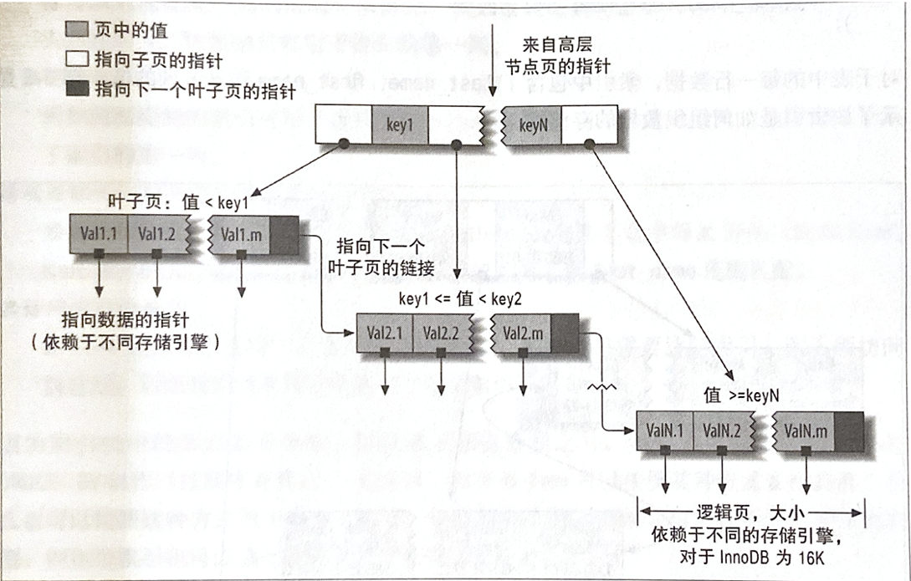
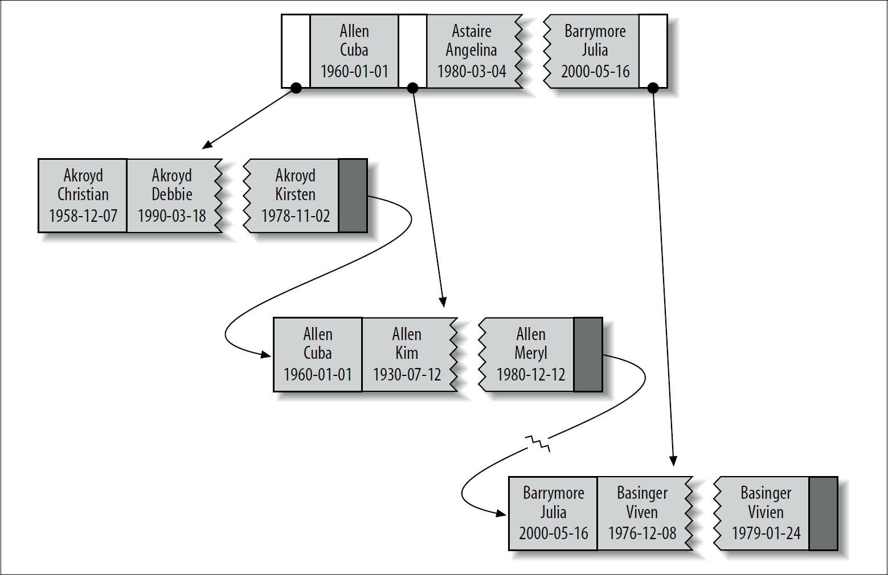
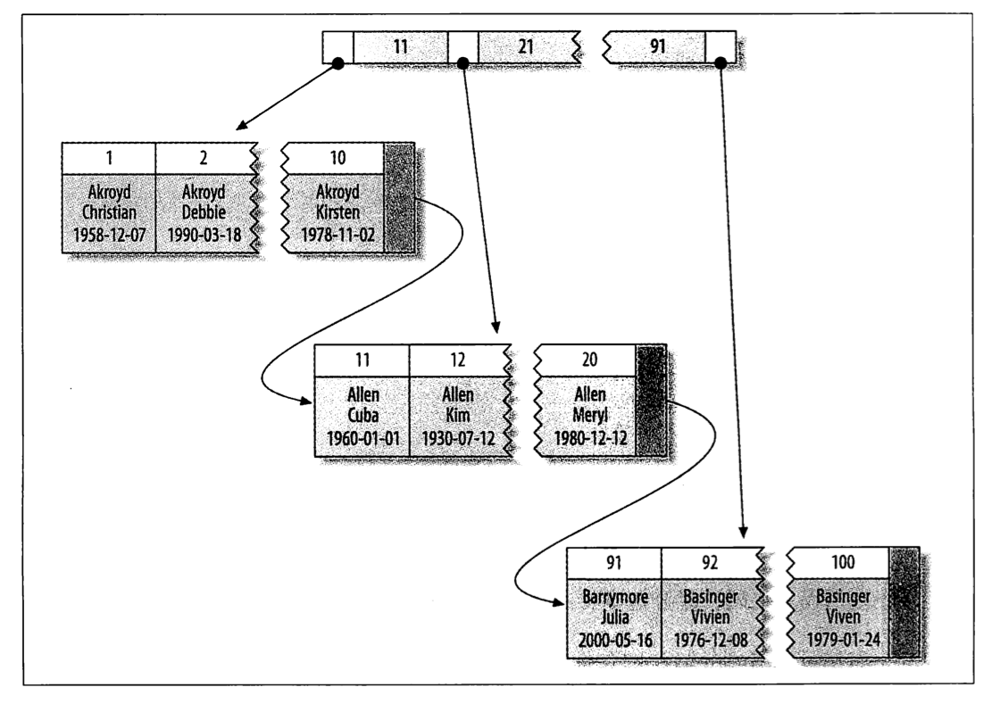
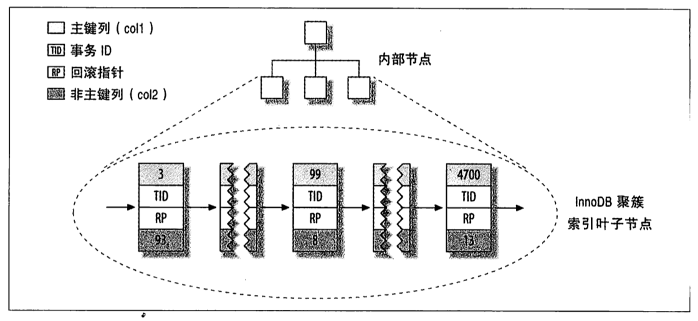
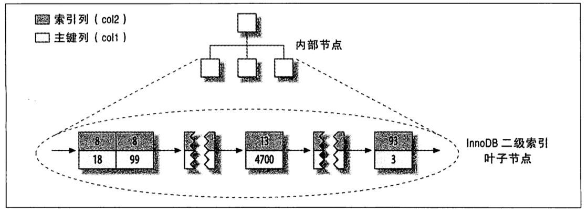

索引是存储引擎用于快速找到记录的一种数据结构。这是索引的基本功能。
索引对于良好的性能非常关键。尤其是当表中的数据量越来越大时，索引对性能的影响愈发重要。在数据量较小且负载较低时，不恰当的索引对性能的影响可能还不明显，但当数据量逐渐增大时，性能则会急剧下降。
索引的类型
索引有很多种类型，可以为不同的场景提供更好的性能。在 MySQL 中，案引是存储引擎层而不是服务器层实现的，所以，并没有统一的索引标准：不同存储引擎的索引的工作方式并不一样，也不是所有的存储引擎都支持所有类型的索引。即使多个存储引擎支持同一种类型的索引，其底层的实现也可能不同。
下面列举 MySQL 常见的索引类型，以及他们的优缺点。
B-Tree 索引
当人们讨论索引的时候，如果没有特别指明类型，那多半说的是 B-Tree 索引，术语 B-Tree 并不特别指它的存储结构就是 B-Tree，InnoDB 使用的就是它的变种 B+Tree。
B 树是二叉树的升级版，又叫平衡多路查找树，它的结点可以有很多子节点，二叉树最多只有 2 个子节点。
B+ 树是应文件系统所需而产生的一种 B 树的变形树，只有最底层的叶子节点保存数据，非叶子节点只保存索引，不保存实际的数据。
B+ 数中每个叶子节点都包含指向下一个叶子结点的顺序访问指针，方便叶子结点的范围遍历，节点的链接也方便了磁盘的顺序 IO。
B-Tree 通常意味着所有的值都是按顺序存储的，并且每一个叶子页到根的距离相同。下图展示了 B-Tree 索引的抽象表示，大致表示了 InnoDB 索引是如何工作的。

B-Tree 索引能够加快访问数据的速度，因为存储引起不再需要进行全表扫描来获取需要的数据，取而代之的是从索引的根节点（图示并未画出）开始进行搜索。根结点的槽中存放了指向子节点的指针，存储引擎根据这些指针向下层查找。通过比较节点页的值和要查找的值可以找到合适的指针进入下层子节点，这些指针实际上定义了子节点页中值的上限和下限。最终存储引擎要么找到对应的值，要么该记录不存在。
叶子结点比较特别，他们的指针指向的是被索引的数据，而不是其它的节点页。下图绘制了一个节点和其对应的叶子节点，其实在根节点和叶子节点之间可能有很多层节点页，树的深度和表的大小直接相关。
**B-Tree 对索引列是顺序组织存储的，所以很适合范围查找数据。**例如，在一个基于文本域的索引树上，像“找出所有以 I 到 K 开头的名字”这样的查找效率会非常高。
假如有如下一张表
1 | CREATE TABLE People ( |
表中的每一行数据，索引中包含了 last_name、first_name 和 dob 列中的值，下图展示了该索引是如何组织数据存储的。

请注意，**索引对多个值进行排序的依据是 CREATE TABLE 语句中定义索引时列的顺序。**看一下最后两个条目，两个人的姓和名都一样，则根据他们的出生日期来排列顺序。
可以使用 B-Tree 索引的查询类型。 B-Tree 索引适用于全键值、键值范围或键前缀查找。其中键前缀查找只适用于根据最左前缀的查找，前面所述的索引对如下类型的查询有效。
全值匹配
全值匹配指的是和索引中的所有列进行匹配，例如前面提到的索引可用于查找姓名为 Cuba Allen，出生于 1960-01-01 的人。
匹配最左前缀
前面提到的索引可用于查找所有姓为 Allen 的人，即只使用索引的第一列。
匹配列前缀
也可以只匹配某一列值的开头部分。例如前面提到的索引可用于查找所有以 J 开头的姓的人。这里也只使用索引的第一列。
匹配范围值
例如前面提到的索引可用于查找姓在 Allen 和 Barrymore 之间的人。这里也只使用了索引的第一列。
精确匹配某一列并范围匹配另外一列
前面提到的索引也可用于査找所有姓为 Allen，并且名字是字母 K 开头(比如 Kim、Karl 等)的人。即第一列 last_name 全匹配，第二列 first_name 范围匹配。
只访问索引的查询
B-Tree 通常可以支持“只访问索引的査询”，即査询只需要访问索引，而无须访问数据行。后面我们将单独讨论这种“覆盖索引”的优化。
因为索引树中的节点是有序的，所以除了按值査找之外，索引还可以用于査询中的 ORDER BY 操作(按顺序査找)。一般来说，如果 B-Tree 可以按照某种方式査找到值，那么也可以按照这种方式用于排序。所以，如果 ORDER BY 子句满足前面列出的几种査询类型，则这个索引也可以满足对应的排序需求。
下面是一些关于 B-Tree 索引的限制：
- 如果不是按照索引的最左列开始査找，则无法使用索引。例如上面例子中的索引无法用于査找名字为 Bill 的人，也无法査找某个特定生日的人，因为这两列都不是最左数据列。类似地，也无法査找姓氏以某个字母结尾的人。
- 不能跳过索引中的列。也就是说，前面所述的索无法用于査找姓为 Smith 并且在某个特定日期出生的人。如果不指定名 (first name)，则 MYSQL 只能使用索引的第一列。
- 如果査询中有某个列的范围査询，则其右边所有列都无法使用索引优化査找。例如有査询
WHERE last name=' Smith' AND first name LIKE'1%' AND dob='1976 12-23'，这个査询只能使用索引的前两列，因为这里LIKE是一个范围条件(但是服务器可以把其余列用于其他目的)。如果范围査询列值的数量有限，那么可以通过使用多个等于条件来代替范围条件。
为什么使用 B-Tree (B+Tree)
红黑树等数据结构也可以用来实现索引，但是文件系统及数据库系统普遍采用 B-/+Tree 作为索引结构。
一般来说，索引本身也很大，不可能全部存储在内存中，因此索引往往以索引文件的形式存储的磁盘上。这样的话，索引查找过程中就要产生磁盘 I/O 消耗，相对于内存存取，I/O 存取的消耗要高几个数量级，所以评价一个数据结构作为索引的优劣最重要的指标就是在查找过程中磁盘 I/O 操作次数的渐进复杂度。换句话说，索引的结构组织要尽量减少查找过程中磁盘 I/O 的存取次数。下面先介绍内存和磁盘存取原理，然后再结合这些原理分析 B-/+Tree 作为索引的效率。
局部性原理与磁盘预读
由于存储介质的特性，磁盘本身存取就比主存慢很多，再加上机械运动耗费，磁盘的存取速度往往是主存的几百分分之一，因此为了提高效率，要尽量减少磁盘 I/O。为了达到这个目的，磁盘往往不是严格按需读取，而是每次都会预读，即使只需要一个字节，磁盘也会从这个位置开始，顺序向后读取一定长度的数据放入内存。这样做的理论依据是计算机科学中著名的局部性原理：
当一个数据被用到时，其附近的数据也通常会马上被使用。
程序运行期间所需要的数据通常比较集中。
由于磁盘顺序读取的效率很高（不需要寻道时间，只需很少的旋转时间），因此对于具有局部性的程序来说，预读可以提高 I/O 效率。
预读的长度一般为页（page）的整倍数。页是计算机管理存储器的逻辑块，硬件及操作系统往往将主存和磁盘存储区分割为连续的大小相等的块，每个存储块称为一页，主存和磁盘以页为单位交换数据。当程序要读取的数据不在主存中时，会触发一个缺页异常，此时系统会向磁盘发出读盘信号，磁盘会找到数据的起始位置并向后连续读取一页或几页载入内存中，然后异常返回，程序继续运行。
B-/+Tree 索引的性能分析
从使用磁盘 I/O 次数评价索引结构的优劣性：根据 B-Tree 的定义，可知检索一次最多需要访问 h 个结点。数据库系统的设计者巧妙的利用了磁盘预读原理，将一个结点的大小设为等于一个页面（默认 16 kb），这样每个结点只需要一次 I/O 就可以完全载入。为了达到这个目的，在实际实现 B-Tree 还需要使用如下技巧：
每次新建结点时，直接申请一个页面的空间，这样可以保证一个结点的大小等于一个页面，加之计算机存储分配都是按页对齐的，就实现了一个 node 只需一次 I/O。
**B-Tree 中一次检索最多需要 h-1 次 I/O（根结点常驻内存），渐进复杂度为 O(h)=O(logdN)。**一般实际应用中，出读 d 是非常大的数字，通常超过 100，因此 h 非常小。
综上所述，用 B-Tree 作为索引结构效率是非常高的。
而红黑树结构，h 明显要深得多。由于逻辑上很近的结点（父子结点）物理上可能离得很远，无法利用局部性原理。所以即使红黑树的 I/O 渐进复杂度也为 O(h)，但是查找效率明显比 B-Tree 差得多。
哈希索引
哈希索引 (hash index) 基于哈希表实现，只有精确匹配索引所有列的査询才有效。对于每一行数据，存储引擎都会对所有的索引列计算一个哈希码 (hash code)，哈希码是个较小的值，并且不同键值的行计算出来的哈希码也不一样。哈希索引将所有的哈希码存储在索引中，同时在哈希表中保存指向每个数据行的指针。
因为索自身只需存储对应的哈希值，所以索引的结构十分紧凑，这也让哈希索引査找的速度非常快。然而，哈希索引也有它的限制：
- 哈希索引只包含哈希值和行指针，而不存储字段值，所以不能使用索引中的值来避免读取行。不过，访问内存中的行的速度很快，所以大部分情况下这一点对性能的影响并不明显。
- 哈希索引数据并不是按照索引值顺序存储的，所以也就无法用于排序。
- 哈希索引也不支持部分索引列匹配査找，因为哈希索始终是使用索引列的全部内容来计算哈希值的。例如，在数据列 (A,B) 上建立哈希索引，如果査询只有数据列 A，则无法使用该索引。
- 哈希索引只支持等值比较査询，包括
=、IN()、<=>(注意<>和<=>是不同的操作，该操作是 NULL-safe equals)。也不支持任何范围査询，例如WHERE price>100。 - 访问哈希索引的数据非常快，除非有很多哈希冲突(不同的索引列值却有相同的哈希值)。当出现哈希冲突的时候，存储引檠必须遍历链表中所有的行指针，逐行进行比较，直到找到所有符合条件的行。
- 如果哈希冲突很多的话，一些索引维护操作的代价也会很高。例如，如果在某个选择性很低(哈希冲突很多)的列上建立哈希索引，那么当从表中删除一行时，存储引擎需要遍历对应哈希值的链表中的每一行，找到并删除对应行的引用，冲突越多，代价越大。
InnoDB 引擎有一个特殊的功能叫做“自适应哈希索引 (adaptive hash index)”。当 InnoDB 注意到某些索引值被使用得非常频繁时，它会在内存中基于 B-Tree 索引之上再创建一个哈希索引，这样就让 B-Tree 索引也具有哈希索引的一些优点，比如快速的哈希査找。这是一个完全自动的、内部的行为，用户无法控制或者配置，不过如果有必要，完全可以关闭该功能。
**创建自定义哈希索引。**如果我们即想使用 B-Tree 的优势，又想使用哈希索引增加速度，可以创建一个单独的列来存放数据的伪哈希索引。这和真正的哈希索引不是一回事，因为还是使用 B-Tree 进行查找，但是它使用哈希值而不是键本身进行索引査找。你需要做的就是在査询的 WHERE 子句中手动指定使用哈希函数。
如果采用这种方式，不要使用 SHA1() 或 MD5() 这种哈希函数，因为他们计算出的哈希值会非常长，浪费空间。它们设计目标是最大程度消除冲突，如果我们的数据量不是特别大，可以使用 CRC32() 这样的函数或者自己编写哈希函数，最简单的就是取前面这种强哈希函数的一部分。CRC32() 返回的是 32 位的整数,当索引有 93000 条记录时出现冲突的概率是 1%。
1 | SELECT CONV(RIGH(MD5('HTTP://www.mysql.com/'),16),16,10)AS HASH64 |
空间数据索引（R-Tree）
MYISAM 表支持空间索引，可以用作地理数据存储。和 B-Tree 索引不同，这类索引无须前缀査询。空间索引会从所有维度来索引数据。査询时，可以有效地使用任意维度来组合查询。必须使用 MYSQL 的 GIS 相关函数如 MBRCONTAINS() 等来维护数据。 MYSQL 的 GIS 支持并不完善，所以大部分人都不会使用这个特性。开源关系数据库系统中对 GIS 的解决方案做得比较好的是 Postgresql 的 POSTGIS。
全文索引
全文索引是一种特殊类型的索引，它査找的是文本中的关键词，而不是直接比较索引中的值。全文搜索和其他几类索引的匹配方式完全不一样。它有许多需要注意的细节，如停用词、词干和复数、布尔搜索等。全文索引更类似于搜索引擎做的事情，而不是简单的 WHERE 条件匹配。
在相同的列上同时创建全文索引和基于值的 B-Tree 索引不会有冲突，全文索引适用于 MATCH AGAINST 操作,而不是普通的 WHERE 条件操作。
索引的优点
索引可以让服务器快速地定位到表的指定位置。但是这并不是索引的唯一作用，到目前为止可以看到，根据创建索引的数据结构不同，索引也有一些其他的附加作用。
最常见的 B-Tree 索引，按照顺序存储数据，所以 MYSQL 可以用来做 ORDER BY 和 GROUP BY 操作。因为数据是有序的，所以 B-Tree 也就会将相关的列值都存储在一起。最后，因为索引中存储了实际的列值，所以某些査询只使用索引就能够完成全部査询。据此特性，总结下来索引有如下三个优点:
- 索引大大减少了服务器需要扫描的数据量。
- 索引可以帮助服务器避免排序和临时表。
- 索引可以将随机 I/O 变为顺序 I/O。
高性能索引策略
独立的列
我们通常会看到一些查询不当地使用索引，或者使得 MYSQL 无法使用已有的索引。如果查询中的列不是独立的，则 MYSQL 就不会使用索引。“独立的列”是指索引列不能是表达式的一部分，也不能是函数的参数。
前缀索引和索引选择性
有时候需要索引很长的字符列，这会让索引变得大且慢。一个策略是前面提到过的模拟哈希索引。但有时候这样做还不够，还可以做些什么呢？
通常可以索引开始的部分字符，这样可以大大节约索引空间，从而提高索引效率。但这样也会降低索引的选择性。**索引的选择性是指，不重复的索引值（也称为基数, cardinality）和数据表的记录总数（#T）的比值,范围从 1/#T 到 1 之间。**索引的选择性越高则查询效率越高，因为选择性高的索引可以让 MYSQL 在查找时过滤掉更多的行唯一索引的选择性是 1，这是最好的索引选择性，性能也是最好的。
一般情况下某个列前缀的选择性也是足够高的，足以满足査询性能。对于 BLOB、TEXT 或者很长的 VARCHAR 类型的列，必须使用前缀索引，因为 MYSQL 不允许索引这些列的完整长度。
诀窍在于要选择足够长的前缀以保证较高的选择性，同时又不能太长(以便节约空间)。
有时侯后缀索引(suffix index)也有用途(例如，找到某个域名的所有电子邮件地址)。 MYSQL 原生并不支持反向索引，但是可以把字符串反转后存储，并基于此建立前缀索引。
多列索引
在多个列上建立独立的单列索引大部分情况下并不能提高 MYSQL 的査询性能。 MYSQL 5.0 和更新版本引入了一种叫“索引合并”(index merge)的策略，一定程度上可以使用表上的多个单列索引来定位指定的行。更早版本的 MYSQL 只能使用其中某一个单列索引。
选择合适的索引列顺序
**对于如何选择索引的列顺序有一个经验法则：将选择性最高的列放到索引最前列。**这个建议有用吗？在某些场景可能有帮助，但通常不如避免随机 IO 和排序那么重要，考虑问题需要更全面(场景不同则选择不同，没有一个放之四海皆准的法则。这里只是说明,，这个经验法则可能没有你想象的重要)。
如果是从诸如 pt-gery-digest 这样的工具的报告中提取“最差”査询，那么再按上述办法选定的索引顺序往往是非常高效的。
1 | pt-query-digest --processlist h=192.168.10.11,u=root,p=root --interval=0.01 --output slowlog > slowsql.log |
尽可能将需要做范围査询的列放到索引的后面，以便优化器能使用尽可能多的索引列来进行最左匹配。
聚簇索引
聚簇索引并不是一种单独的索引类型，而是一种数据存储方式。具体的细节依赖于其实现方式，**但 InnoDB 的聚簇索引实际上在同一个结构中保存了 B-Tree 索引和数据行。**索引和数据存入同一个 .idb 文件中。
当表有聚簇索引时，它的数据行实际上存放在索引的叶子页（leaf page）中。术语“聚簇”表示数据行和相邻的键值紧凑地存储在一起。因为无法同时把数据行存放在两个不同的地方，所以一个表只能有一个聚簇索引。
下图展示了聚簇索引中的记录是如何存放的。注意到，叶子页包含了行的全部数据，但是节点页只包含了索引列。在这个案例中，索引列包含的是整数值。

InnoDB 将通过主键聚集数椐，这也就是上图中的“被索引的列”就是主键列。
默认情况下 Innodb 会使用定义的主键来作为聚簇索引，没有主键的话会使用所有列都不为空的第一个唯一索引，再没有的话会生成一个隐藏的基于行 ID 的聚簇索引，行 ID 就是插入顺序。
聚集的数据有一些重要的优点：
- 可以把相关数据保存在一起。例如实现电子邮箱时，可以根据用户 ID 来聚集数据，这样只需要从磁盘读取少数的数据页就能获取某个用户的全部邮件。如果没有使用聚簇索引，则每封邮件都可能导致一次磁盘 I/O。
- 数据访问更快。聚簇索引将索引和数据保存在同一个 B-Tree 中，因此从聚簇索引中获取数据通常比在非聚簇索引中査找要快。
- 使用覆盖索引扫描的査询可以直接使用页节点中的主键值。
如果在设计表和查询时能充分利用上面的优点，那就能极大地提升性能。同时，聚簇索引也有一些缺点：
- 聚簇数据最大限度地提高了 I/O 密集型应用的性能，但如果数据全部都放在内存中，则访问的顺序就没那么重要了，聚簇索引也就没什么优势了。
- 插人速度严重依赖于插入顺序。按照主键的顺序插入是加载数据到 InnoDB 表中速度最快的方式。但如果不是按照主键顺序加载数据，那么在加载完成后最好使用
OPTIMIZE TABLE命令重新组织一下表。 - 更新聚簇索引列的代价很高，因为会强制 InnoDB 将每个被更新的行移动到新的位置。
- 基于聚簇索引的表在插入新行，或者主键被更新导致需要移动行的时候，可能面临“页分裂（page split）”的问题。当行的主键值要求必须将这一行插入到某个已满的页中时，存储引擎会将该页分裂成两个页面来容纳该行，这就是一次页分裂操作。页分裂会导致表占用更多的磁盘空间。
- 聚簇索引可能导致全表扫描变慢，尤其是行比较稀疏，或者由于页分裂导致数据存储不连续的时侯。
- **二级索引(非聚簇索引)**可能比想象的要更大，因为在二级索引中既包含了为其指定的列，索引的叶子节点还包含了引用行的主键列。
- 二级索引访问需要两次索引査找，而不是一次。
最后一点可能让人有些疑惑，为什么二级索引需要两次索引査找？答案在于二级索引中保存的“行指针”的实质。要记住，二级索引叶子节点保存的不是指向行的物理位置的指针，而是行的主键值。
这意味着通过二级索引査找行，存储引擎需要找到二级索引的叶子节点获得对应的主键值，然后根据这个值去聚簇索引中査找到对应的行。这里做了重复的工作：两次 B-Tree 査找而不是一次。对于 InnoDB，自适应哈希索能够减少这样的重复工作。这就是所谓的“回表查询”。也就是说聚簇索引叶子结点存放主键和数据，非聚簇索引（其它索引）叶子结点存放的是引用行的主键列而非数据的指针。
InnoDB 数据分布
假设有如下表：
1 | CREATE TABLE layout test ( |
假设该表的主键取值为 1~10000，按照随机顺序插入并使用 OPTIMIZE TABLE 命令做了优化。换句话说，数据在磁盘上的存储方式已经最优，但行的顺序是随机的。列 coL2 的值是从 1~100 之间随机赋值，所以有很多重复的值。
InnoDB 的数据分布。因为 InnoDB 支持聚簇索引，所以使用非常不同的方式存储同样的数据。 InnoDB 以如图所示的方式存储数据。

聚簇索引的每一个叶子节点都包含了主键值、事务 ID、用于事务和 MVCC 的回滚指针以及所有的剩余列 (在这个例子中是 coL2)。如果主键是一个列前缀索引, InnoDB 也会包含完整的主键列和剩下的其他列。
InnoDB 二级索引的叶子节点中存储的不是“行指针”，而是主键值，并以此作为指向行的“指针”。
上图展示了 B-Tree 的聚簇索引的叶子节点结构，下图是非叶子节点，它包含了索引列和一个指向下级节点的指针（下一级节点可以是非叶子节点，也可以是叶子节点）。这对聚簇索引和二级索引都适用。

在 InnoDB 表中按主键顺序插入行
在 Mysql 中最简单的就是使用自增的主键列，这样可以保证行按顺序写入，对于根据主键做关联操作的性能也会更好。
最好避免随机的（不连续且值的分布范围非常大）聚簇索引，特别是对于 I/O 密集型的应用。例如，从性能的角度考虑，使用 UUID 来作为聚簇索引则会很糟糕：它使得聚簇索引的插人变得完全随机，这是最坏的情况，使得数据没有任何聚集特性。
缺点如下：
- 写入的目标页可能已经刷到磁盘上并从缓存中移除，或者是还没有被加载到缓存中，InnoDB 在插入之前不得不先找到并从磁盘读取目标页到内存中。这将导致大量的随机 I/O。
- 因为写入是乱序的，InnoDB 不得不频繁地做页分裂操作，以便为新的行分配空间。页分裂会导致移动大量数据，一次插入最少需要修改三个页而不是一个页。
- 由于频繁的页分裂，页会变得稀疏并被不规则地填充，所以最终数据会有碎片。
覆盖索引
索引确实是一种査找数据的高效方式，但是 MYSQL 也可以使用索引来直接获取列的数据，这样就不再需要读取数据行。如果索引的叶子节点中已经包含要査询的数据，那么还有什么必要再回表査询呢？如果一个索引包含(或者说覆盖)所有需要查询的字段的值，我们就称之为“覆盖索引”。
覆盖索引是非常有用的工具，能够极大地提高性能。考虑一下如果査询只需要扫描索引而无须回表，会带来多少好处：
- 索引条目通常远小于数据行大小，所以如果只需要读取索引，那 MYSQL 就会极大地减少数据访问量。这对缓存的负载非常重要，因为这种情况下响应时间大部分花费在数据拷贝上。覆盖索引对于 IO 密集型的应用也有帮助，因为索引比数据更小，更容易全部放入内存中。
- 因为索引是按照列值顺序存储的(至少在单个页内是如此)，所以对于 I/O 密集型的范围査询会比随机从磁盘读取每一行数据的 I/O 要少得多。对于某些存储引擎，例如
MyISAM和Percona Xtradb，甚至可以通过OPTIMIZE命令使得索引完全顺序排列，这让简单的范围查询能使用完全顺序的索引访问。 - 一些存储引擎如 MyISAM 在内存中只缓存索引，数据则依赖于操作系统来缓存，因此要访问数据需要一次系统调用。这可能会导致严重的性能问题，尤其是那些系统调用占了数据访问中的最大开销的场景。
- 由于 InnoDB 的聚簇索引，覆盖索引对 InnoDB 表特别有用。 InnoDB 的二级索引在叶子节点中保存了行的主键值，所以如果二级主键能够覆盖査询，则可以避免对主键索引的二次查询。
不是所有类型的索引都可以成为覆盖索引。覆盖索引必须要存储索引列的值，而哈希索引、空间索引和全文索引副等都不存储索引列的值,所以 MySQL 只能使用 B-Tree 索引做覆盖索引。
当发起一个**被索引覆盖的査询(也叫做索引覆盖査询)**时，在 EXPLAIN 的 Extra 列可以看到 “Using index” 的信息。
对于部分需要查询不包含所有索引的字段时，我们可以通过**延迟关联（deferred join）**来利用覆盖索引的优势。
1 | mysql> EXPLAIN SELECT * |
在 prod_id 和 actor 上我们设置了索引，在查询的一阶段 Mysql 可以使用覆盖索引，从子查询中先找到符合条件的 prod_id，然后根据 prod_id 值在外层查询匹配所有需要的列值。这样优化的效果取决于 WHERE 条件匹配的行数，匹配的行数越多且使用到索引越多越优化。
在大多数存储引擎中，覆盖索引只能覆盖那些只访问索引中部分列的査询。不过，可以更进一步优化 InnoDB。回想一下，InnoDB 的二级索引的叶子节点都包含了主键的值，这意味着 InnoDB 的二级索引可以有效地利用这些“额外”的主键列来覆盖査询。
例如， sakila.actor 使用 InnoDB 存储引擎，并在 last_name 字段有二级索引，虽然该索引的列不包括主键 actor_id，但也能够用于对 actor_id 做覆盖査询：
1 | mysql> EXPLAIN SELECT actor_id, last_name FROM sakila.actor WHERE last_name ='HOPPER'; |
1 | id: 1 |
上面提到的很多限制都是由于存储引擎 API 设计所导致的。 MySQL 5.6 版本引入了 “索引条件推送(index condition pushdown)” 将过滤条件传到存储引擎层，可以减少传递到服务器层的数据量，这个优化默认开启。
使用索引扫描来做排序
MySQL 有两种方式可以生成有序的结果；通过排序操作，或者按索引顺序扫描，如果 EXPLAIN 出来的 type 列的值为 “index”，则说明 MySQL 使用了索引扫描来做排序（不要和 Extra 列的 “Using index” 搞混淆了）。
只有当索引的列顺序和 ORDER BY 子句的顺序完全一致，并且所有列的排序方向（倒序或正序）都一样时，MySQL 才能够使用索引来对结果做排序。如果査询需要关联多张表，则只有当 ORDER BY 子句引用的字段全部为第一个表时，才能使用索引做排序。
ORDER BY 子句和查找型査询的限制是一样的：需要满足索引的最左前缀的要求；否则，MySQL 都需要执行排序操作，而无法利用索引排序。
有一种情况下 ORDER BY 子句可以不满足索引的最左前缀的要求，就是前导列为常量的时候。如果 WHERE 子句或者 J0IN 子句中对这些列指定了常量，就可以“弥补”索引的不足。
例如， Sakila 示例数据库的表 rental 在列 (rental_date, Inventory_id, customer_id) 上有名为 rental_date 的索引。
1 | mysql> EXPLAIN SELECT rental_id, staff_id FROM sakila.rental |
MYSQL 可以使用 rental_date 索引为下面的査询做排序，从 EXPLAIN 中可以看到没有出现文件排序 (Using filesort) 操作；
1 | type: ref |
下面是一些不能使用索引做排序的查询：
-
下面这个查询使用了两种不同的排序方向，但是索引列都是正序排序的：
1
... WHERE rental_date='2005-05-25' ORDER BY inventory_id DESC, customer_id ASC;
-
下面这个查询的 ORDER BY 子句中引用了一个不在索引中的列：
1
... WHERE rental_date='2005-05-25' ORDER BY inventory_id, staff_id;
-
下面这个查询的 WHERE 和 ORDER BY 中的列无法组合成索引的最左前缀：
1
... WHERE rental_date='2005-05-25' ORDER BY customer_id;
-
下面这个查询在索引列的第一列上是范围条件，所以 MYSQL 无法使用索引的其余列：
1
... WHERE rental_date='2005-05-25' ORDER BY inventory_id, customer_id;
-
这个査询在 inventory_id 列上有多个等于条件。对于排序来说，这也是一种范围查询：
1
... WHERE rental_date='2005-05-25' AND inventory_id IN(1, 2) ORDER BY customer_id;
下面这个例子理论上是可以使用索引进行关联排序的，但由于优化器在优化时将 file_actor 表当作关联的第二张表，所以实际上无法使用索引：
1 | mysql> EXPLAIN SELECT actor_id, title FROM sakila.film_actor |
冗余和重复索引
MySQL 允许在相同列上创建多个索引，无论是有意的还是无意的。MySQL 需要单独维护重复的索引，并且优化器在优化査询的时侯也需要逐个地进行考虑，这会影响性能。
冗余索引和重复索引有一些不同。如果创建了索引(A)，再创建索引(A,B)就是冗余索引，因为这只是前一个索引的前缀索引。因此索引(A,B)也可以当作索引(A)来使用(这种冗余只是对 B-Tree 索引来说的)。但是如果再创建索引(B,A)，则不是冗余索引，索引(B) 也不是，因为B不是索引(A,B)的最左前缀列。另外，其他不同类型的索引(例如哈希索引或者全文索引)也不会是 B-Tree 索引的冗余索引，无论覆盖的索引列是什么。
解决冗余索引和重复索引的方法很简单，删除这些索引就可以，但首先要做的是找出这样的索引。Percona Tookit 中的 pt-duplicate-key-checker 可以帮我们分析表结构找出冗余和重复的索引。
未使用的索引
这样的索引完全是累赘，建议考虑删除。
定位未使用的索引最简单有效的办法是在 Percona Server 或者 MariaDB 中先打开 User statistics 服务器变量，
然后让服务正常运行一段时间，再通过 INFOMATION_SCHEMA.INDEX_STATISTICS 就能查到每个索引的使用频率。
另外，还可以使用 Percona Toolkit 中的 pt-index-usage，该工具可以读取査询日志，并对日志中的每条査询进行 EXPLAIN 操作，然后打印出关于索引和查询的报告。这个工具不仅可以找出哪些索引是未使用的，还可以了解査询的执行计划一一例如在某些情况有些类似的査询的执行方式不一样，这可以帮助你定位到那些偶尔服务质量差的査询，优化它们以得到一致的性能表现。该工具也可以将结果写入到 MYSQL 的表中，方便查询结果。
索引和锁
索引可以让査询锁定更少的行。如果你的査询从不访问那些不需要的行，那么就会锁定更少的行，从两个方面来看这对性能都有好处。首先，虽然 InnoDB 的行锁效率很高，内存使用也很少，但是锁定行的时侯仍然会带来额外开销；其次，锁定超过需要的行会增加锁争用并减少并发性。
InnoDB 只有在访问行的时候才会对其加锁，而索引能够减少 InnoDB 访问的行数，从而减少锁的数量。但这只有当 InnoDB 在存储引擎层能够过滤掉所有不需要的行时才有效。如果索引无法过滤掉无效的行，那么在 InnoDB 检索到数据并返回给服务器层以后，MySQL 服务器才能应用 WHERE 子句。这时已经无法避免锁定行了：InnoDB 已经锁住了这些行，到适当的时候オ释放。在 MySQL5.1 和更新的版本中，InnoDB 可以在服务器端过滤掉行后就释放锁，但是在早期的 MYSQL 版本中, InnoDB 只有在事务提交后オ能释放锁。
通过下面的例子再次使用数据库 Sakila 很好地解释了这些情况：
1 | mysql> SET AUTOCOMMIT=0; |
1 | +----------+ |
这条査询仅仅会返回 2-4 之间的行，但是实际上获取了 1~4 之间的行的排他锁。InnoDB 会锁住第 1 行，这是因为 MySQL 为该查询选择的执行计划是索引范围扫描：
1 | mysql> EXPLAIN SELECT actor_id FROM sakila.actor WHERE actor_id <5 AND actor_id <> 1 FOR UPDATE; |
1 | +----+-------------+-------+-------+---------+--------------------------+ |
换句话说，底层存储引擎的操作是“从索引的开头开始获取满足条件 actor_id<5 的记录”，服务器并没有告诉 InnoDB 可以过滤第 1 行的 WHERE 条件。注意到 EXPLAIN 的 Extra 列出现了“Using where”，这表示 MySQL 服务器将存储引擎返回行以后再应用 WHERE 过滤条件。
下面的第二个査询就能证明第 1 行确实已经被锁定，尽管第一个査询的结果中并没有这个第 1 行。保持第一个连接打开，然后开启第二个连接并执行如下査询：
1 | mysql> SET AUTOCOMMIT=0; |
这个查询将会挂起，直到第一个事务释放第 1 行的锁。
关于 InnoDB、索引和锁有一些很少有人知道的细节：InnoDB 在二级索引上使用共享(读)锁，但访问主键索引需要排他(写)锁。这消除了使用覆盖索引的可能性，并且使得 SELECT FOR UPDATE 比 L0CK IN SHARE MODE 或非锁定査询要慢很多。
避免多个范围条件
EXPLAIN 输出中 type 为 range 的代表范围查询，比如下面这种查询：
1 | mysql> EXPLAIN SELECT actor_id FROM sakila.actor WHERE actor_id > 45; |
但是下面这条查询呢？
1 | mysql> EXPLAIN SELECT actor_id FROM sakila.actor WHERE actor_id IN(1, 4, 99); |
从 EXPLAIN 的结果是无法区分这两者的，但可以从值的范围和多个等于条件来得出不同。在我们看来，第二个查询就是多个等値条件查询。
我们不是挑剔：这两种访问效率是不同的。对于范围条件查询，MySQL 无法再使用范围列后面的其他索引列了，但是对于“多个等值条件查询”则没有这个限制。
更新索引统计信息
可以使用 SHOW INDEX FROM 命令来査看索引的基数(Cardinality)。例如：
1 | SHOW INDEX FROM sakila.actor; |
这里需要特别提及的是索引列的基数(Cardinality)，其显示了存储引擎估算索引列有多少个不同的取值。引擎估算索引列有多少个不同的取值。在 MySQL5.0 和更新的版本中，还可以通过 INFORMATION_SCHEMA.STATISTICS 表很方便地査询到这些信息。
InnoDB 会在表首次打开，或者执行 ANALYZE TABLE，抑或表的大小发生非常大的变化(大小变化超过十六分之一或者新插入了 20 亿行都会触发)的时候计算索引的统计信息。
InnoDB 在打开某些 INFORMATION_SCHEMA 表，或者使用 SHOW TABLE STATUS 和 SHOW INDEX，抑或在 MYSQL 客户端开启自动补全功能的时侯都会触发索引统计信息的更新。
总结
在 MySQL 中，大多数情况下都会使用 B-Tree 索引。其他类型的索引大多只适用于特殊的目的。如果在合适的场景中使用索引，将大大提高査询的响应时间。本章将不再介绍更多这方面的内容了，最后值得总的回顾一下这些特性以及如何使用 B-Tree 索引。
在选择索引和编写利用这些索引的査询时，有如下三个原则始终需要记住：
- 单行访问是很慢的。特别是在机械硬盘存储中(SSD 的随机 I/O 要快很多，不过这点仍然成立)。如果服务器从存储中读取一个数据块只是为了获取其中一行，那么就浪费了很多工作。最好读取的块中能包含尽可能多所需要的行。使用索引可以创建位置引用以提升效率。
- 按顺序访问范围数据是很快的，这有两个原因。第一，顺序 IO 不需要多次磁盘寻道，所以比随机 I/O 要快很多(特别是对机械硬盘)。第二，如果服务器能够按需要顺序读取数据，那么就不再需要额外的排序操作，并且 GROUP BY 查询也无须再做排序和将行按组进行聚合计算了。
- 索引覆盖査询是很快的。如果一个索引包含了査询需要的所有列，那么存储引擎就不需要再回表査找行。这避免了大量的单行访向，而上面的第 1 点已经写明单行访问是很慢的。
**那如何判断一个系统创建的索引是合理的呢？**一般来说，我们建议按响应时间来对査询进行分析。找出那些消耗最长时间的査询或者那些给服务器带来最大压力的査询，然后检査这些査询的 schema、SQL 和索引结构，判断是否有査询扫描了太多的行，是否做了很多额外的排序或者使用了临时表，是否使用随机 I/O 访问数据，或者是有太多回表査询那些不在索引中的列的操作。
如果仍然想找到那些索引不是很合适的査询并在它们成为问题前进行优化，则可以使用 pt-query-digest 的查询审査“review’”功能，分析其 EXPLAIN 出来的执行计划。